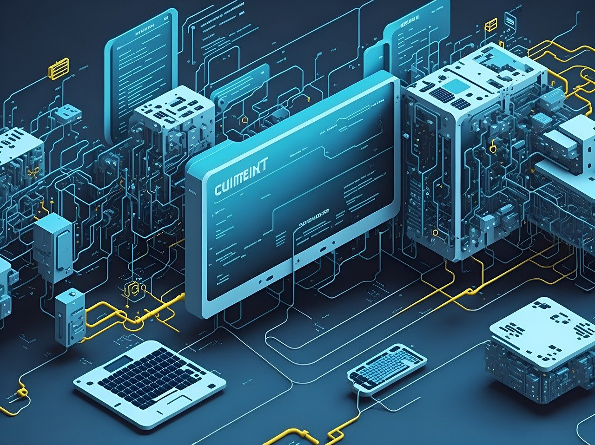
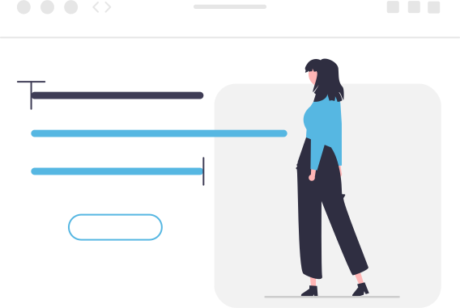

Mes tyrinėjame ir suteikiame žinių apie technologijų vystymąsi ir jų poveikį ateities visuomenei.
Dirbtinis intelektas (AI)
AI tobulės ir taps dar protingesnis, mokysis iš daug didesnio duomenų kiekio ir gali tapti neįkainojamu įrankiu įvairiose srityse. Tai gali apimti mediciną, automobilių pramonę, švietimą ir dar daugelį kitų sričių, kur technologijos gali atlikti sudėtingas užduotis greičiau ir efektyviau nei žmonės.

5G ir aukšto dažnio ryšys
Greitesnis ir patikimesnis mobilusis ryšys revoliucinės 5G technologijos dėka leis greitesnę duomenų perdavimo spartą ir mažesnį delsimo laiką. Tai atvers duris plačiam greito ryšio taikymui, tokiems kaip autonominių transporto priemonių tinklas, išplečiant virtualią ir padidinant pramonės automatizavimą.
Internetas dalykų (IoT)
Daugiau įrenginių ir daiktų bus sujungti su internetu, leisdamas mums valdyti ir monitoruoti juos iš tolimojoje vietoje. Automatizuoti namų valdymo sistemos, sveikatos priežiūros prietaisai ir pramoninės technologijos bus tik keletas pavyzdžių, kur technologijos palaikys efektyvesnį ir patogesnį gyvenimo būdą.

Augmentuota realybė (AR) ir virtuali tikrovė (VR)
AR ir VR technologijos taps labiau įprastos kasdieniame gyvenime. VR gali būti naudojama pramogoms, švietimui, reabilitacijai, o AR gali suteikti papildomos informacijos, pagalbos arba įvairių patirčių papildymo galimybių.
Apie
Aš esu Evelina Gadliauskaitė. Man yra 20 metų. Esu vartotojo patyrimo (UX) dizainere. Padedu kurti programinės įrangos produktą pagal vartotojo įpročius, elgesį, poreikius.

DUK
Taip. Technologijų plėtra atneša inovacijas, pažangą ir efektyvumą į visus gyvenimo aspektus. Svarbu yra naudoti technologijas atsakingai ir etiškai, siekiant maksimizuoti jų teigiamą poveikį ir išvengti galimų neigiamų padarinių.
Technologijos tokių mašinų kūrimui ir įgyvendinimui vis dar yra tyrinėjamos ir plėtojamos. Tai sudėtingas procesas, kuris priklauso nuo daugelio veiksnių, įskaitant technologinę pažangą, reguliavimą, saugumą ir kitus aspektus. Tačiau ateityje, su tolesniu technologijų vystymusi, skraidančios mašinos gali tapti įmanomos, tačiau tikslus laikas yra neaiškus.
Kontaktai
Jei turite kokių klausimų, visada galite parašyti užpildę šią formą: